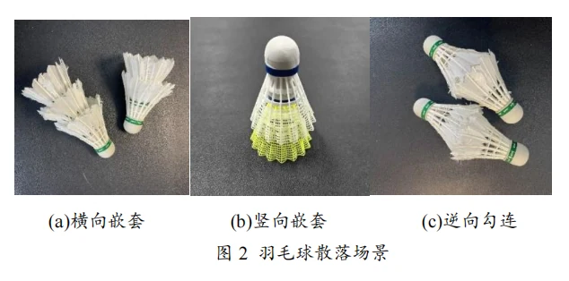
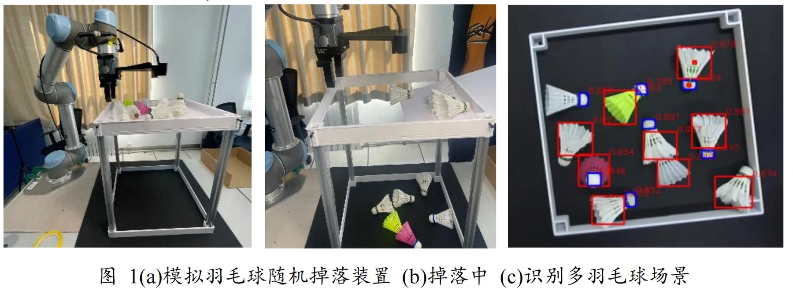
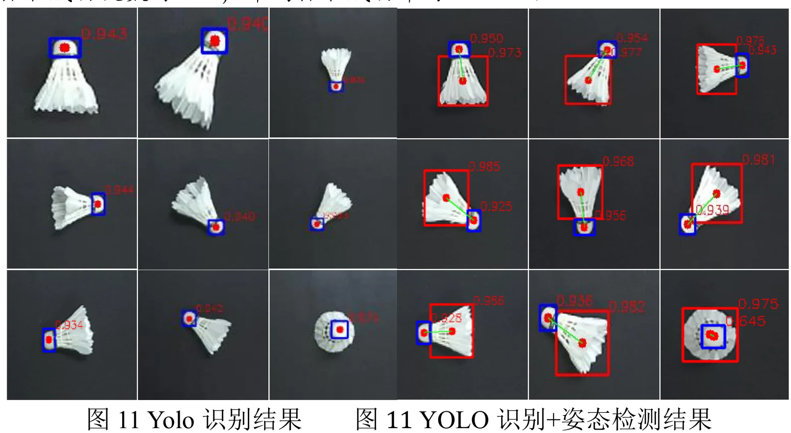
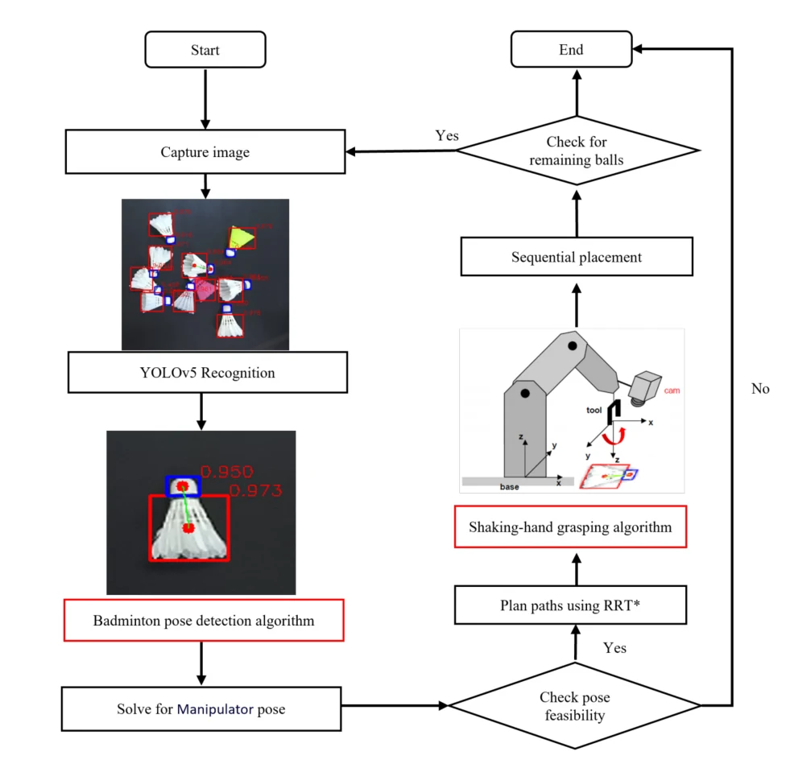

视觉抓取Visual grasping · 2021.06—2022.07Jun 2021–Jul 2022 · 浙江深酷机器人有限公司Zhejiang Shenku Robotics Co., Ltd.
羽毛球对打机器人Badminton rally robot
面向羽毛球对打，以深度学习和 EKF 预测轨迹、MPC 控制站位与击球；另以 YOLOv5 位姿检测和目标分离开展视觉抓取拓展，完成实机抓取演示。For badminton rallying, deep learning and EKF predict flight trajectories while MPC controls positioning and striking. A separate YOLOv5-based grasping extension demonstrates pose-aware shuttlecock pickup on a real robot.
- 对打项目时间Rally project period
- 2021.06—2022.07Jun 2021–Jul 2022
- 对打项目单位Rally project partner
- 浙江深酷机器人有限公司Zhejiang Shenku Robotics Co., Ltd.
- 对打项目职责Rally project role
- 部分功能核心开发者Core developer for selected functions
项目背景Background
对打机器人需要在有限时间内感知来球、预测飞行轨迹、调整站位并击球。围绕羽毛球机器人，另有独立的视觉抓取拓展：在球头、羽身方向和多球堆叠条件下选择抓握位置并分离目标。A rally robot must perceive an incoming shuttlecock, predict flight, position itself, and strike within a short time. The material also documents a separate grasping extension that handles directional geometry and piled objects.
任务说明Tasks
对打系统由移动底盘与机械臂协同，实现来球轨迹预测、站位调整和击球；视觉抓取拓展则面向单球、堆叠和勾连羽毛球的定位、夹持与分离。两部分任务分别展示。The rally system coordinates a mobile base and arm for trajectory prediction, positioning, and striking. The grasping extension instead detects, holds, and separates single, piled, or entangled shuttlecocks. The two tasks are presented separately.

设备说明Robot hardware
简历中的对打系统基于移动底盘与机械臂。视觉抓取拓展样机另外包含相机、夹爪和控制计算单元，基于 ROS 连接识别、位姿计算与执行动作。The CV describes a rally platform with a mobile base and arm. The separate grasping prototype in the slides adds a camera, gripper, and control computer, using ROS to connect perception and execution.

系统和关键技术System and key technologies
对打系统：采用深度学习与扩展卡尔曼滤波预测羽毛球轨迹，以 MPC 协调底盘站位和机械臂击球。视觉抓取拓展：在 YOLOv5 检测中定位球头、羽身等关键部位，以几何关系求解方向与抓握姿态，并在夹持后加入抖动动作分离堆叠目标。Rally system: deep learning and an extended Kalman filter predict shuttlecock flight, while MPC coordinates the base and striking arm. Grasping extension: YOLOv5 locates head and feather key regions, geometry determines orientation and grasp pose, and a shaking action helps separate piled targets.


演示与结果Demonstrations and results
简历记载对打系统实现羽毛球对打，本人参与部分功能核心开发。当前提供的实机短片对应视觉抓取拓展，展示抓取平台与羽毛球操作。The CV records a badminton rally system, with my contribution focused on selected functions. The supplied robot clip documents the separate visual grasping extension and its platform.
视觉抓取拓展实验Grasping-extension experiments
视觉抓取拓展的单羽毛球与多羽毛球抓取准确率分别为97.83%和95.1%，对应抓取任务的演示记录。该记录未列出样本量。The grasping-extension records give accuracies of 97.83% for single shuttlecocks and 95.1% for multiple shuttlecocks. These are grasping results; the sample counts are unspecified.